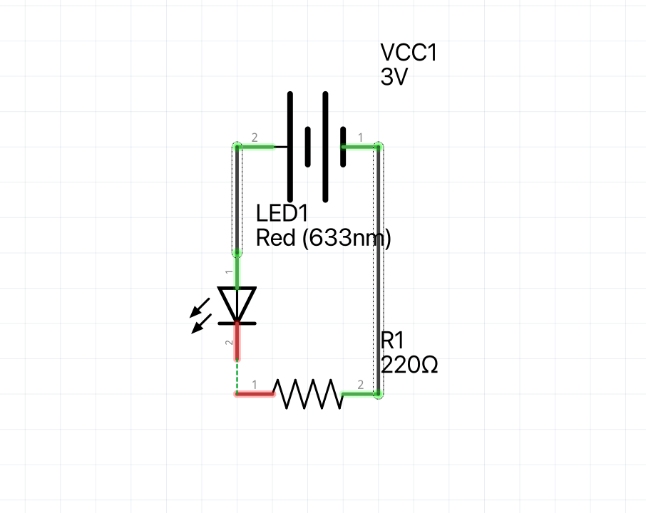

Welcome to Max's Object Blog
This is the place where I will showcase my design process for my 2026 projects.
Project 1: Simple Circuits
For this first Lab we learned the basics of simple circuits. First I used my multimeter to test my 9V
battery, I got a reading of 9.1V.  I
then set up my power delivery board, my right power line reading at 3.3V and my left one at 5V.
I have my own large electornics kit that I've used over the years and unfortunatley i only had a
220ohm resistor. 3.3V divided by 220 ohms gave me, this gave me 15mA which I knew was still above
the forward current. I then wired up my circuit with the 220ohm resistor wired to the cathode and
the ground line, I then used a jumper between the power rail and the anode.
I
then set up my power delivery board, my right power line reading at 3.3V and my left one at 5V.
I have my own large electornics kit that I've used over the years and unfortunatley i only had a
220ohm resistor. 3.3V divided by 220 ohms gave me, this gave me 15mA which I knew was still above
the forward current. I then wired up my circuit with the 220ohm resistor wired to the cathode and
the ground line, I then used a jumper between the power rail and the anode.

If we wanted to power the LED with a 5v source, with a goal of 25mA, then we would need a 200ohm
resitor, this is perfect as the lowest resistor I currently have is 220ohm.
Lastly, I switched back to the 3.3V circuit,
then added a button in series to control the power flow.
Extra Volt
For this I created a circuit that would naturally power the LED, and then I added a button in parallel so that when pressed the circuit 'shorts' and the power goes through the button instead. The opperator this demonstrates is the ! not operator.
Material list
- Power source (I used my arduino 5v and GND)
- Push button
- 330ohm resistor
- Red LED
- Breadboard